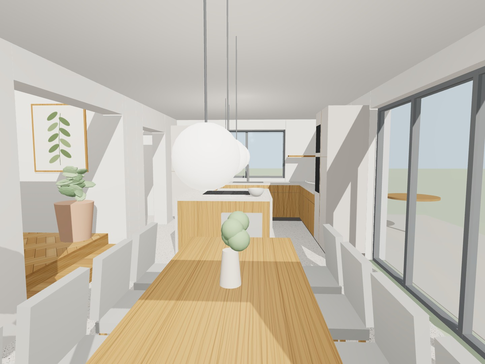
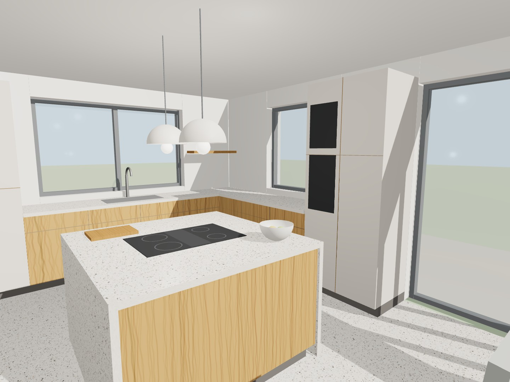
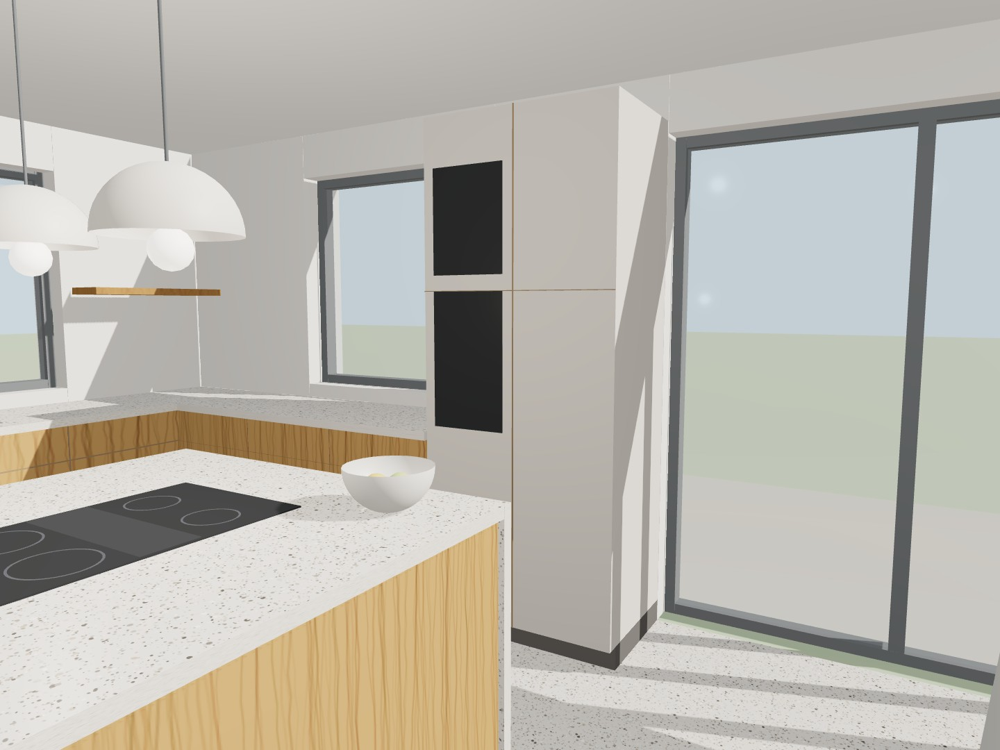
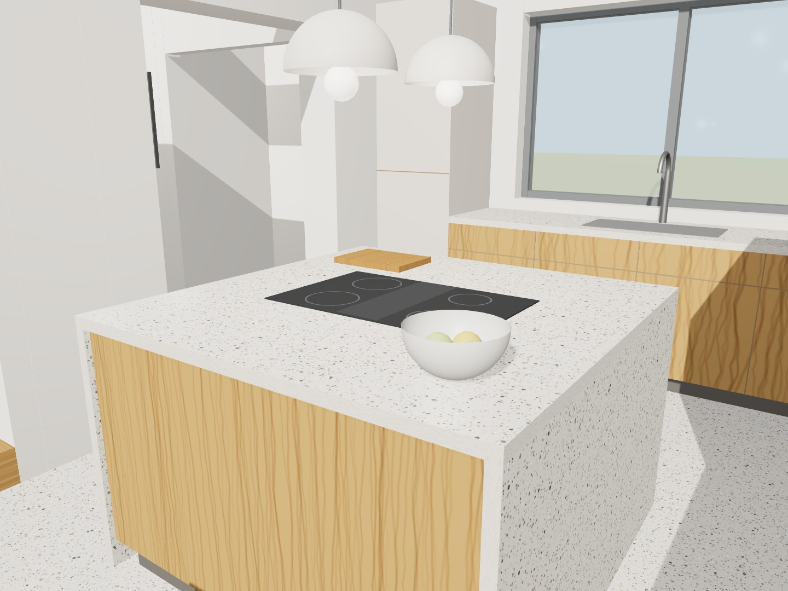
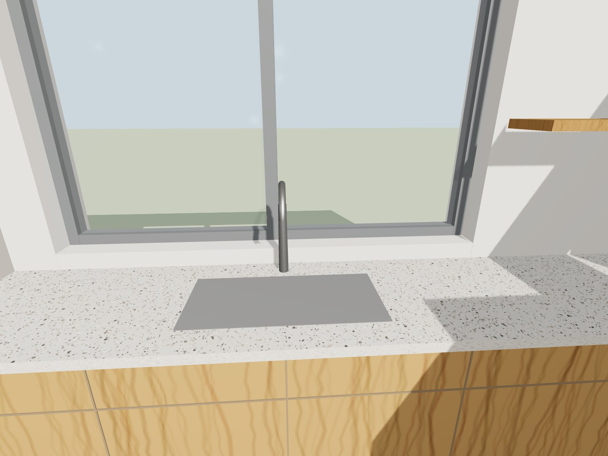
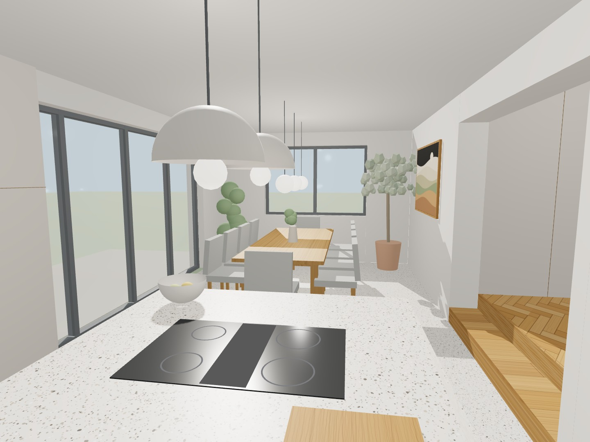
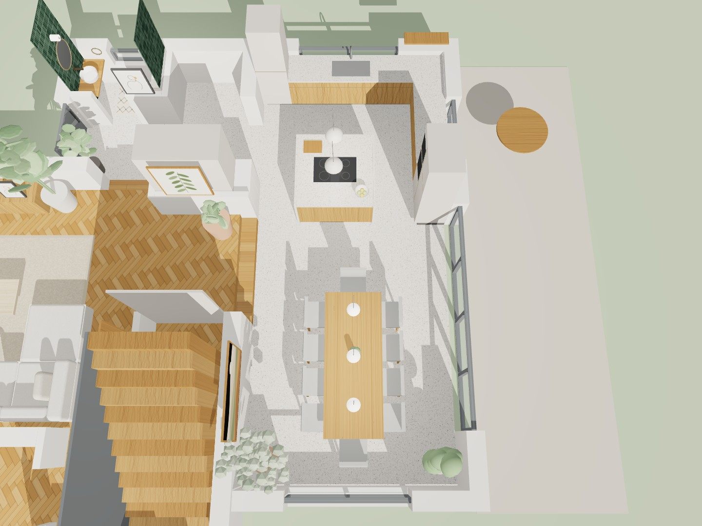

3D-Visualisierungen aus dem Modell, keine Fotos. Maße und Anordnung stimmen mit dem Plan überein, Farben und Glanz wirken je nach Bildschirm anders. Zum Speichern lange auf ein Bild drücken, zum Vergrößern antippen.







| Position | Was wir suchen | Menge |
|---|---|---|
| Möbel | ||
| Fronten unten + Insel | Eiche furniert, Maserung senkrecht und durchlaufend, matt geölt-Optik, grifflos | ≈ 4,9 lfm + Insel |
| Fronten Hochschränke | Lack matt, warmes Greige, grifflos (Farbmuster mitnehmen) | 60 + 90 cm |
| Fronten Zeile + Hochschränke | Lack matt, warmes Greige, grifflos | ≈ 4,9 lfm + 150 cm |
| Fronten Insel | Eiche furniert, Maserung senkrecht, grifflos | 1,50 m |
| Fronten unten + Insel | Lack matt, helles Sandbeige, grifflos | ≈ 4,9 lfm + Insel |
| Fronten Hochschränke | Eiche furniert, Maserung senkrecht, grifflos | 60 + 90 cm |
| Unterschränke | Nordwand 3,10 m (inkl. Eckschrank), Terrassenwand 1,80 m; Tiefe 60 cm, Arbeitshöhe 92 cm, Sockel 10 cm dunkel und zurückgesetzt | 4,90 lfm |
| Hochschränke | Ecke Nord/West: 60 cm für Kühlschrank. Terrassenwand: 90-cm-Block aus 60 cm Gerätehochschrank (Backofen + Kompaktgerät) und 30 cm Apothekerauszug. Höhe 2,30 m, Blende bis zur Decke | 2 Blöcke |
| Kochinsel | Unterschränke von beiden Seiten nutzbar, mittig das Kochfeld | 1,50 × 1,50 m |
| Arbeitsplatte | Terrazzo hell, feine Körnung wie der Boden, 4 cm. Insel mit Wangen bis zum Boden. Alternativ Keramik oder Quarz in Terrazzo-Optik | ≈ 8 m² |
| Wandbord | Eiche massiv, rechts neben dem Fenster, 4 cm stark, verdeckte Befestigung | ≈ 85 × 25 cm |
| Geräte und Spüle | ||
| Kochfeld | Induktion ca. 80 cm mit integriertem Muldenlüfter, Umluft | 1 |
| Backofen | 60 cm, Einbau auf Arbeitshöhe, schwarzes Glas | 1 |
| Kompaktgerät | 45 cm, Dampfgarer oder Kompaktbackofen mit Mikrowelle | 1 |
| Kühlschrank | Einbau-Kühl-Gefrierkombination, Nische 178 cm | 1 |
| Geschirrspüler | 60 cm, vollintegriert, neben der Spüle | 1 |
| Spüle + Armatur | Unterbau-Einzelbecken ca. 70–76 cm unter dem Fenster. Armatur Edelstahl gebürstet (oder Messing passend zum Gäste-WC), niedrig genug für den Fensterflügel | 1 Set |
| Essplatz, Licht, Boden | ||
| Esstisch | Eiche massiv, 250 × 100 cm, Platz für 8 Personen plus 2 an den Stirnseiten | 1 |
| Stühle | Polsterstühle mit Eichenbeinen, Stoff z. B. Steingrau oder Salbei | 10 |
| Leuchten | über dem Tisch 3 Pendel mit Opalglas-Kugel, über der Insel 2 Pendel mit hellem Stoffschirm, warmweiß 2700 K, dimmbar | 3 + 2 |
| Boden | Terrazzo hell, feine Körnung, durchgehend in Flur und Gäste-WC | ≈ 30 m² |
Gelb-braun: Eiche, grau: Greige (Schema 1). KS Kühlschrank, BO Backöfen. Blau: Fenster und Glasfront.
Zwei oder drei Bilder von oben in ChatGPT hochladen und diesen Text dazu einfügen. KI-Bilder halten Maße und Anzahl der Teile oft nicht genau ein, für die Stimmung sind sie gut.
Erstelle aus den beigefügten 3D-Ansichten ein fotorealistisches Innenraumfoto einer offenen Wohnküche (3,70 × 8,15 m, Raumhöhe 2,50 m). Halte Anordnung, Proportionen und Blickwinkel der Vorlage exakt ein, verändere nichts an der Raumaufteilung. Möblierung: - Küchenzeile über Eck: an der Fensterwand mit Unterbauspüle unter dem Fenster, links ein raumhoher Kühlschrank-Hochschrank; an der Wand zur Terrasse Unterschränke und ein raumhoher Hochschrankblock mit Backofen und Kompaktbackofen (schwarzes Glas) auf Arbeitshöhe - Unterschränke und Kochinsel: Eichenfurnier mit senkrechter Maserung, grifflos - Hochschränke: matt lackiert in warmem Greige, grifflos, bis zur Decke - Kochinsel 1,50 × 1,50 m mit schwarzem Induktionskochfeld und Muldenlüfter - Arbeitsplatte 4 cm aus hellem Terrazzo mit feiner Körnung, an der Insel als Wangen seitlich bis zum Boden - Boden: derselbe helle Terrazzo, cremeweiß mit kleinen grauen Steinchen - Wände: warmer beiger Kalkputz, ein schmales Wandbord aus Eiche neben dem Fenster - Esstisch aus massiver Eiche, 2,50 × 1,00 m, mit zehn Polsterstühlen in Steingrau und Eichenbeinen - über dem Tisch drei Pendelleuchten mit Opalglas-Kugeln, über der Insel zwei Pendel mit hellem Stoffschirm - große Glasfront zur Terrasse mit Blick ins Grüne, Olivenbaum im Topf in der Ecke Licht: weiches Nachmittagslicht durch die Glasfront, warme Akzente der Leuchten (2700 K). Stil: ruhig, hochwertig, warm-minimalistisch, Architekturfotografie, Weitwinkel 24 mm, Augenhöhe, natürliche Schatten.